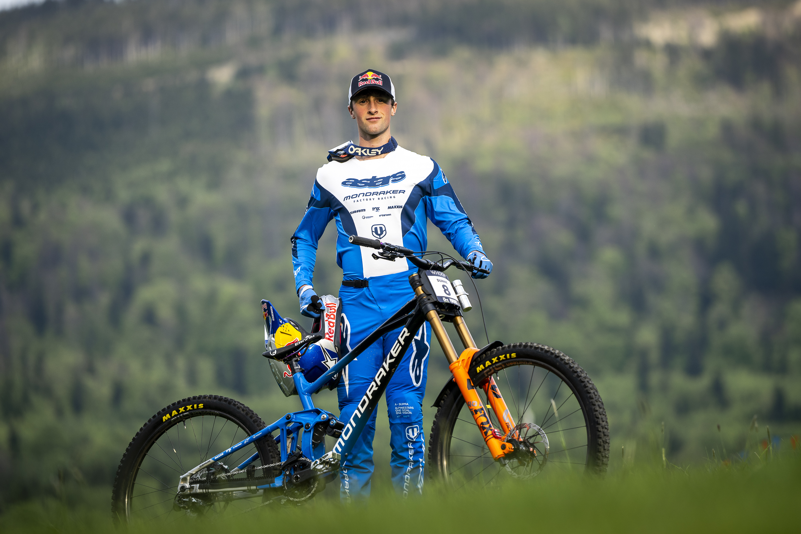
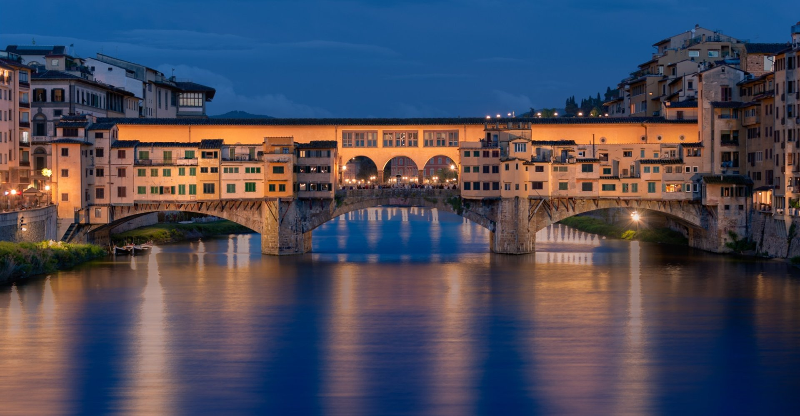

<!DOCTYPE html>
<html lang="en">
<head>
    <title>Assignment 1</title>
    <meta charset="UTF-8">
    <meta name="viewport" content="width=device-width, initial-scale=1.0">
    <title>Document</title>
</head>
<body>

</body>
</html>

<!-- morten og kristian er konger--> 
<!DOCTYPE html>
<html lang="en">
    <head>
        <link rel="stylesheet" href="mystyle.css">
    </head>
<body>
    
    <div class="flexbox-container">
            <h1 id="introduction">This is us</h1>
            <div style="display: flex; justify-content: center; align-items: center;">
                
            </div></div>
        <div class="container-horisontal">
            <div class="flexbox-item">
                <h1>Morten</h1>
            </div>
            <div class="flexbox-item">
                <h1>Kristian</h1>
            </div>
            <div class="flexbox-item">
                <h3> Highschool subjects</h3>
                    <p>
                        During highschool I had a lot of different subject. In my first year, I had the basics such as mathematics,
                        Norwegian, English, History and so on. In my second year, where you can choose your subjects more, I chose to 
                        continue with math, English, as well as taking physics and programming. In my last year, I did a switch to more
                        social subject such as politics, English, and german. The reason for the switch, was mostly because my
                        career-advisor told me that that was the best choice based on my grades, but I kept programming a lot in my spare time
                        and I have since then been programming a lot as a hobby. 
                    </p>
                    <h3> Coding skills</h3>
                    <p>
                        My coding skills are mostly self-taught. I did however, as previously mentioned, take programming 
                        as a subject in my second year. Here I learned a lot of HTML, CSS and JavaScript, which is the 
                        foundation of which I have built my programming skills as the stand now. 
                        I have also learned a lot of Python and I have made some projects in my spare time. Although I have to 
                        admit that my skills in Python are mostly basics. 
                    </p>
                    <h3> Hobbies</h3>
                    <p>
                        My hobbies have changed a lot over the years, but I have always been interested in sports.
                        I played football for almost 10 years, but I was never any good, really. I did the switch just before 
                        middleschool, and went on the biking instead. More specifically, mountainbiking. I really like
                        to go for long rides either in the mountain or in the woods, as long as there is some good trails.
                        I have also been skiing since I was little, but I never really found the interest. 
                        Alongside sports, I have always been interested in technology, and some gaming. I particularly learing new 
                        skills within tech, and to implement theory into some more practical. 
                    </p>
            </div>
            
            <div class="flexbox-item">
                <h3>
                    Highschool subjects
                </h3>
                <p>
                    My highschool studies was a vocational schooling program. The subjects we had that differed was
                    programming, tech-support, servers and internship programs. We used a couple of different programming/coding languages and that would be
                </p>
                <ul>
                    <li>HTML</li>
                    <li>CSS</li>
                    <li>JavaScript</li>
                    <li>Python</li>
                    <li>PHP</li>
                    <li>SQL</li>
                </ul>
                <h3>Coding skills</h3>
                <p>
                    Even tho i had some programming in my vocational studies the main way i learned coding was primaraly through W3 schools, youtube and classmates.
                    My coolest coding/programming project thus far has been a combination of PHP and SQl to setup a database. That database was used to store weatherdata that was collected with a RPi using Python on a weatherhat. The data was presented on a website using HTML, CSS and PHP.
                </p>
                <h3>Hobbies</h3>
                <p>
                    My hobbies are quite different in a lot of ways. The hobby i spend most time presuing for the time is chess and trying to 
                    improve my middlegame due to it beeing my worst prospect for the time beeing. In second place i have bodybuilding/powerlifting to keep my mind sharp 
                    i always try to stay active and my favorite part of bodybuilding is seeing the steady progress that omes with consitency.
                </p>
            </div>
            <div class="flexbox-item">
                <h1>My favourites</h1>
                
                
                <p>
                    Ronan Dunne is a Mountain biker from Ireland. He is 23 years old 
                    and races for Red Bull. Despite his young age, he has already won 2 world cups
                    and is considered one of the best in the world. I admire him for his fearless riding style and his ability to stay calm under pressure.
                </p>
                
                
                
                <p>
                    My favourite travel destination is Italy, and more specifically Florence and Tuscany.
                    I have been to Italy more times than I can remember, and I love everything about it. 
                    I especially love Florence because my Father and Step-Mother got married there 
                    in 2015. We went back this summer for a 10-year anniversary trip and everything
                    was just as I remembered. 
                    Everything from the hot weather, culture, arcitecture and food is just perfect.
                </p>

                


            </div>
            <div class="flexbox-item">
                <h1>My favourites</h1>
                
                
                <p>
                    Magnus Carlsen is my favourite athlete due to hos unrivaled reign as world champion since 2013 and his ability to remain so consistent even when he is on the older side of competetors
                </p>
                
                
                
                <p>
                    I really wanna travel to Japan for a multitude of reasons but if i had to narrow it down i think the parts i would be most exited about i would say nature, arcitecture, culture and infrastructure.
                </p>
            </div>
            <div class="flexbox-item">
            <section>
                <h2 id="questions" style="text-align: center;">
                    Questions
                </h2>
                <table style="border: solid 3px black; margin:2px; padding:2px; width: 100%;">
                    <tr>
                        <th>Questions</th>
                        <th>Answers</th>   
                    </tr>
                    <tr>
                        <td>What does the server in client server architecture do?</td>
                        <td>The server processes requests from clients and provides them with the requested resources or services.</td>
                    </tr>
                    <tr>
                        <td>What does the client do?</td>
                        <td>The client sends requests to the server and displays the server's responses to the user.</td>
                    </tr>
                    <tr>
                        <td>What is an IP address?</td>
                        <td>An IP address is a unique identifier assigned to each device connected to a network that uses the Internet Protocol for communication.</td>
                    </tr>
                    <tr>
                        <td>What is DNS?</td>
                        <td>DNS (Domain Name System) is a hierarchical system that translates human-readable domain names (like www.example.com) into IP addresses that computers use to identify each other on the network.</td>
                    </tr>
                    <tr>
                        <td>What is the difference between internet and WWW?</td>
                        <td>The internet is a global network of interconnected computers, while the World Wide Web (WWW) is a system of interlinked hypertext documents accessed via the internet.</td>
                    </tr>
                    <tr>
                        <td>Explain what HTML is</td>
                        <td>HTML (HyperText Markup Language) is the standard markup language used to create web pages. It describes the structure of a web page using elements and tags.</td>
                    </tr>
                    <tr>

                    </tr>
                </table>
            </section>
            </div>
            <div class="flexbox-item">
                <h2 style="text-align: center;">
                    Links
                </h2>
                <ul>
                    <li><a href="https://www.imdb.com/title/tt0137523/">IMDB</a></li>
                    <li><a href="#questions">Questions</a></li>
                    <li><a href="#introduction">Introduction</a></li>
                </ul>
            </div>
            


        </div>


            </div>
                
        </div>
        <div class="flexbox-item">
                <input type="text"
                class="searchBar"
                id="search-field"
                placeholder="Search..."/>
        </div>
    
            
        
            

       
    </div>
    
</body>
<footer style="text-align:center;">
    <p>Created by Morten and Kristian</p>
</footer>
</html>

